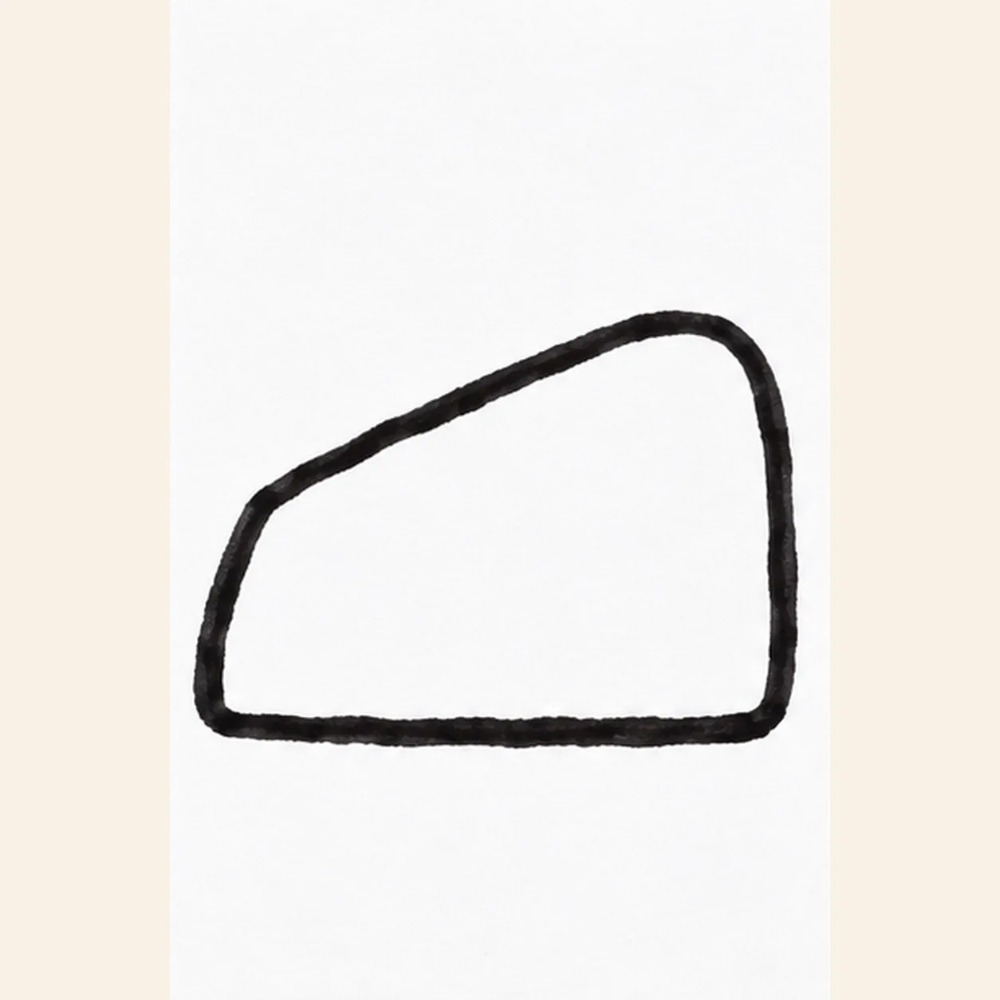
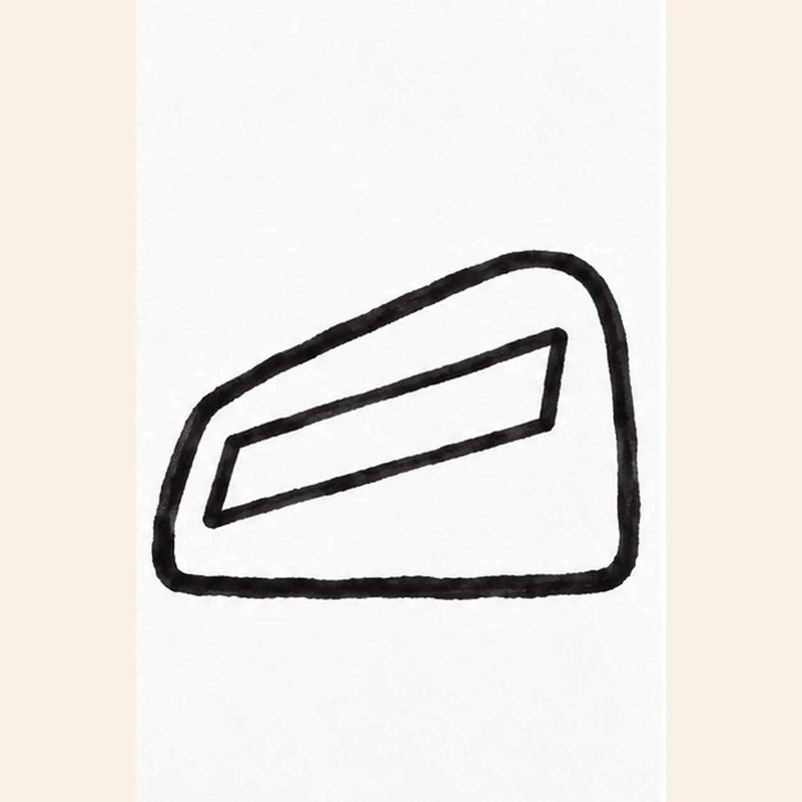
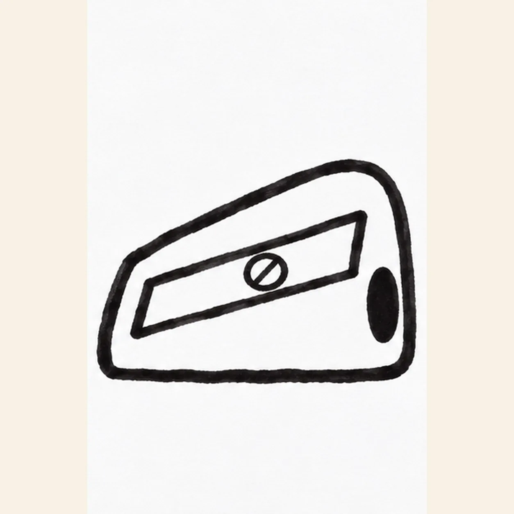
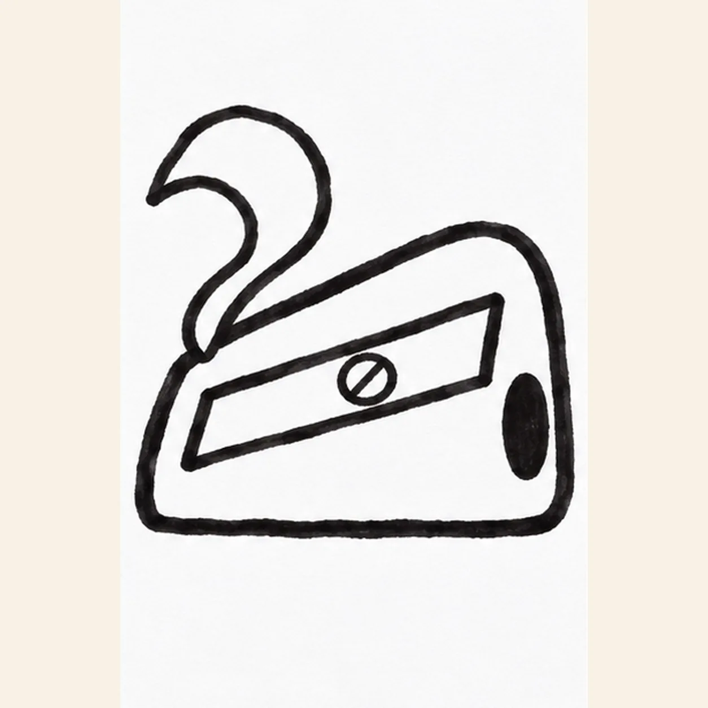
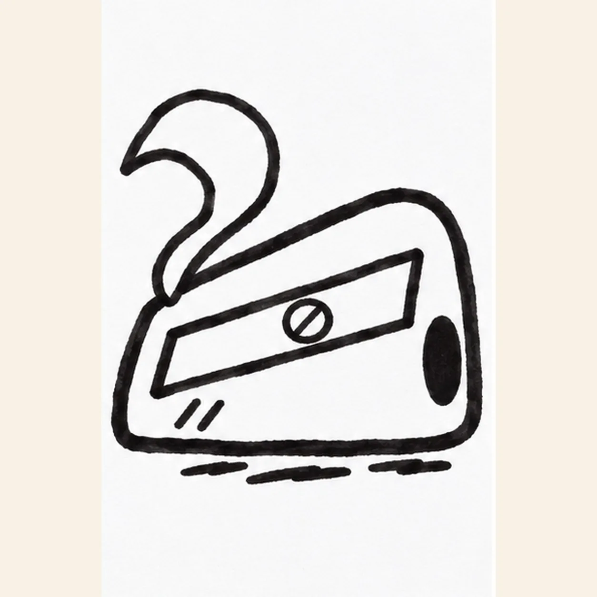

Felt-tip marker mode
Let's draw a pencil sharpener
Treat this as one playful practice round: sketch the idea loosely, simplify the shapes, then commit with confident marker outlines and bright fills.
-
01

Outline the sharpener
With a black felt tip, draw the left rounded end, let the top rise slightly toward the right, and close a broad wedge-shaped front face with a flatter base. Leave clear paper above the left corner for the shaving.
Marker tip: Ghost the long top slope twice in the air, then pull it in one confident stroke.
-
02

Inset the blade
Inside the broad front face, pull two short parallel slanted lines and join their ends into a narrow blade plate. Keep a strip of shell visible all around it.
Marker tip: Keep a strip of red shell between the blade plate and outer edge.
-
03

Set screw and opening
Place one small round screw inside the blade plate. At the right end of the shell, draw one dark oval pencil opening without crossing the established outer contour.
Marker tip: Let the screw sit within the plate while the black opening stays at the right end.
-
04

Curl one shaving
From the open left upper edge, sweep a broad ribbon upward and left into one loose curl; return a second line beside it to show its width. Keep this single shaving away from the screw and pencil opening.
Marker tip: Rotate the page to make the curl in two flowing strokes, keeping one shaving only.
-
05

Mark the body and ground
Draw two short hatches near the lower front edge, then set three separated ground strokes just beneath the base. Let the black marker dry before filling the shell.
Marker tip: Count two short face hatches and three broken ground strokes.
-
06

Color the sharpener and curl
Fill the established shell bright red, the blade plate cool gray, the screw pale yellow, and the single shaving warm tan. Pull marker strokes along the shaving curve, leave a few paper streaks, and reinforce only the existing black edges and shadow.
Marker tip: Pull the tan marker along the curl so its streaks follow the shaving, then leave the black opening unfilled.